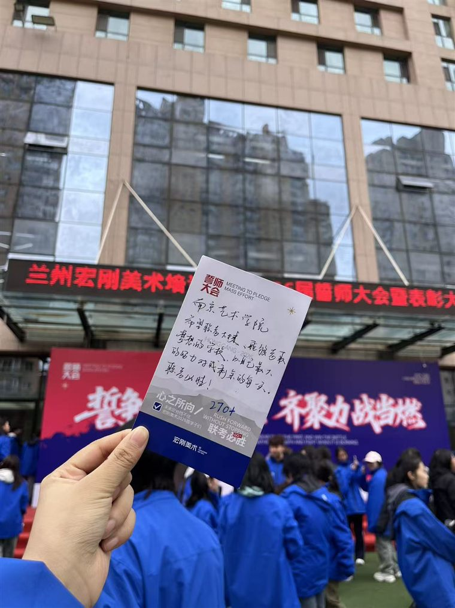
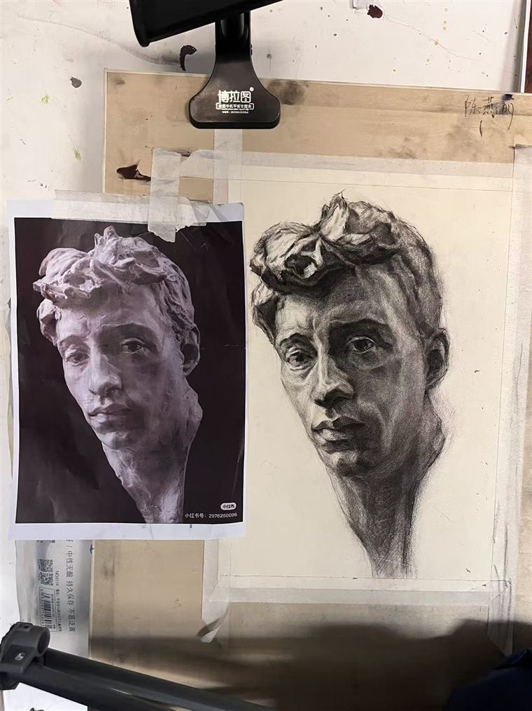

Mes œuvres, mes jours
我的创作历程
从第一张歪斜的线条，
到如今能握住光影的分寸。
石膏像、素描头像、速写与色彩，
每一张习作，都是我同自己较劲的证据。
它们在画室的灯下被反复修改，
也在我的青春里慢慢成形。
愿你翻过的每一页，
都是我真真切切走过的路。
— Yanli · 2026 —
Every page, a piece of my journey.
Carnet de fleurs
Mon Carnet
Chen Yanli
cliquez pour ouvrir

« le souhait » · 心愿 « le trait » · 笔下
« le trait » · 笔下
« l'étude » · 习作
— p.3 —
 « l'atelier » · 画室
« l'atelier » · 画室

« la patience » · 坚持
« l'effort » · 努力
— p.6 —
« le chemin » · 路上
— p.7 —
cliquez sur le livre